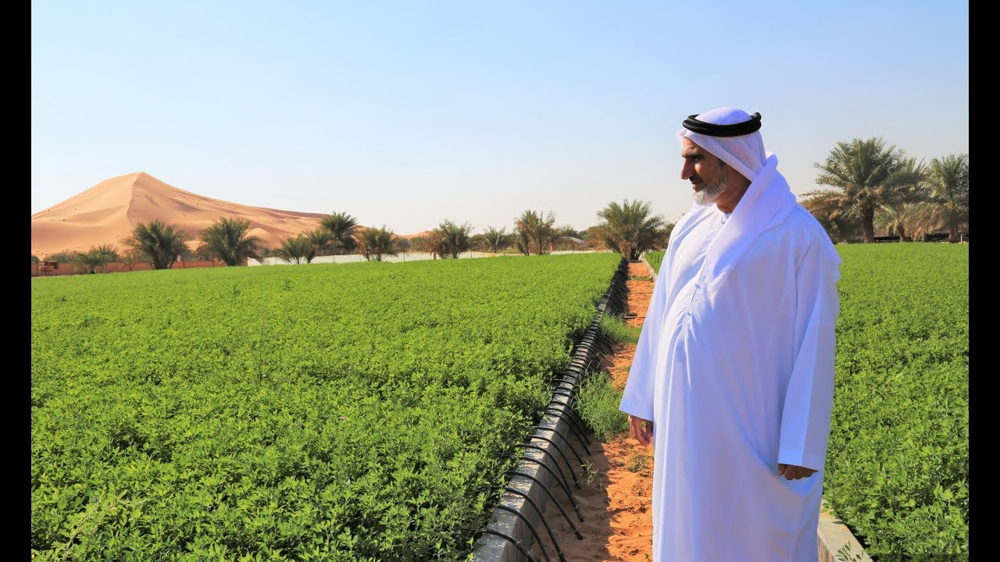

Link to registration  The United Arab Emirates is located in an arid zone, where desert environment accounts for more than three quarters of the country's total area. Its environment is characterized by low rainfall, high temperatures, poor soil and lack of natural waterways, all of which have a clear impact on the country's agricultural sector. Despite the challenges posed by these factors, the UAE has made outstanding efforts over the past decades to build an agricultural sector that is better able to contribute to food diversity and the national economy by adopting policies that limit the impact of these factors and adopt sustainable and climate smart agriculture methods that focus on the optimal utilization of the cultivated land and the quality of local produce to enhance its competitiveness. In general, these policies are based on innovative technologies and solutions, such as hydroponics, aquaponics and organic agriculture, in addition to strengthening agricultural pest control programs, reducing loss and waste throughout the food chain and expanding interest in scientific studies and research in the agricultural field.